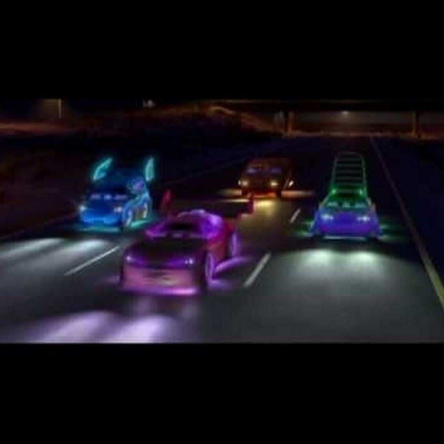

Yo! Welcome to DRHRoadHazards channel, videos of DRH and Cars
Ey yo Dj what up! we got our selves a nodder...
Yo wingo! lane change man rite back at ya oobs ...
DRHRoadHazards was an anonymous YouTuber who uploaded edits of the Delinquent Road Hazards from Pixar's Cars (2006). They were active between 2009-2011. The channel was rebranded into a Vietnamese musician's channel named V.O.X Official in March 2018, later renamed TomV around 2022, and the original videos were deleted. DRHRoadHazards got over 47k subscribers and over 76 million total views before the channel was rebranded. They uploaded 16 videos centered around the Delinquent Road Hazards, of which 15 have been recovered as of September 2026.
From YouTube's metadata, it shows that DRHRoadHazards joined YouTube on Sun Feb 15 2009 18:54:07 GMT (Convert)
| Title | ID | Upload Date | Length | Recovery Status |
|---|---|---|---|---|
| Delinquent Road Hazards | 9XVFYMpWwn4 | 2009-02-17 | 114 | Partially Recovered |
| Delinquent Road Hazards: DRH Tribute | w6ID2eMcrXk | 2009-02-18 | 220 | Fully Recovered |
| Cars - The video game: High Speed Heist | v4xFulRoh-Y | 2009-07-13 | 305 | Fully Recovered |
| Cars - Soundtracks: Lightning Stikes Back | Gz7eCkyfi7U | 2009-07-13 | 151 | Fully Recovered |
| Cars - Soundtracks: High Speed Heist | FuC-i0zwkkA | 2009-07-13 | 149 | Fully Recovered |
| Delinquent Road Hazards - Rush Hour | tjZvvveKfR4 | 2009-07-14 | 270 | Fully Recovered |
| Delinquent Road Hazards - Sounding Engines | hFwbnqn0M08 | 2009-07-15 | 150 | Fully Recovered |
| Delinquent Road Hazards - The Story of DRH | Ptk4RTbZ04s | 2009-07-16 | 273 | Fully Recovered |
| Delinquent Road Hazards - Fight Back | tfGhZ7dZYlQ | 2009-07-18 | 246 | Fully Recovered |
| Delinquent Road Hazards - Da Unbeatables | 3o4mGIn5pL0 | 2009-07-18 | 217 | Fully Recovered |
| Delinquent Road Hazards - Neva Eva | EBuv7s1aMR0 | 2009-07-18 | 217 | Fully Recovered |
| Cars - Tokyo Drift Trailer | 3dKM5V4kGZ8 | 2009-08-16 | 144 | Fully Recovered |
| Delinquent Road Hazards - Kick off | jqsIA_axUKc | 2010-03-26 | 197 | Fully Recovered |
| Delinquent Road Hazards - Bass is Kicking | OjjDA1c29qE | 2010-04-25 | 230 | Fully Recovered |
| Delinquent Road Hazards - This is My Life | -G3R9844alQ | 2010-04-25 | 213 | Fully Recovered |
| Delinquent Road Hazards - Im Back | vndiYED5wGE | 2011-02-07 | 195 | Fully Recovered |
DRHRoadHazards started becoming popular among the Cars community on YouTube around 2014-2015, though their presence was known earlier, in 2009-2010, with small early popularity.
| Date and Time (UTC) | Subscribers | Views |
|---|---|---|
| 2013-02-04 04:28:25 | 1,463 | - |
| 2013-05-11 20:06:03 | 2,727 | - |
| 2013-06-05 03:35:16 | 3,445 | - |
| 2013-07-04 14:45:31 | 3,866 | 22,938,577 |
| 2013-08-03 20:18:07 | 4,418 | - |
| 2013-09-06 19:37:25 | 4,882 | - |
| 2014-07-10 21:33:07 | 8,263 | - |
| 2014-10-14 19:27:33 | 10,350 | - |
| 2015-03-24 04:57:18 | 14,533 | - |
| 2015-07-20 08:01:48 | 17,810 | - |
| 2016-09-21 23:12:51 | 29,097 | 60,245,200 |
| 2016-10-04 08:16:36 | 29,534 | 60,687,883 |
| 2016-11-01 08:14:52 | 30,554 | 61,743,515 |
| 2016-12-01 08:09:47 | 32,239 | 63,408,851 |
| 2017-01-01 08:24:24 | 34,380 | 65,486,708 |
| 2017-02-01 08:13:24 | 35,964 | 67,006,463 |
| 2017-03-01 09:00:47 | 37,083 | 68,179,725 |
| 2017-04-01 10:42:59 | 38,380 | 69,382,699 |
| 2017-05-01 21:15:54 | 39,555 | 70,546,733 |
| 2017-06-01 09:06:32 | 40,186 | 71,280,404 |
| 2017-07-01 11:07:27 | 40,897 | 71,957,273 |
| 2017-08-01 22:34:37 | 41,567 | 72,647,296 |
| 2017-09-01 23:37:03 | 42,233 | 73,237,527 |
| 2017-10-01 09:13:01 | 42,799 | 73,755,999 |
| 2017-11-01 23:19:24 | 43,523 | 74,419,870 |
| 2017-12-01 20:19:35 | 44,177 | 75,004,272 |
| 2018-01-01 23:18:59 | 45,267 | 75,708,640 |
| 2018-02-01 09:41:00 | 46,087 | 76,207,066 |
| 2018-02-28 10:11:47 | 46,614 | 76,589,208 |
| 2018-03-29 11:30:55 | 47,132 | 76,926,677 |
Created by Darthilmi
DRHRoadHazards Archival Project on Discord